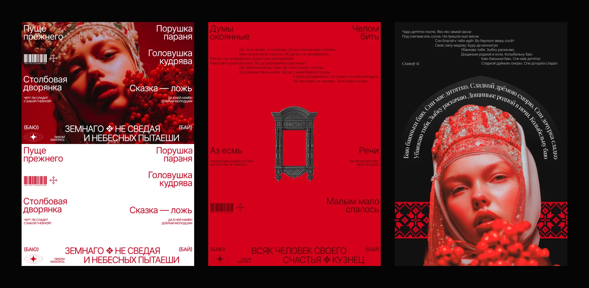
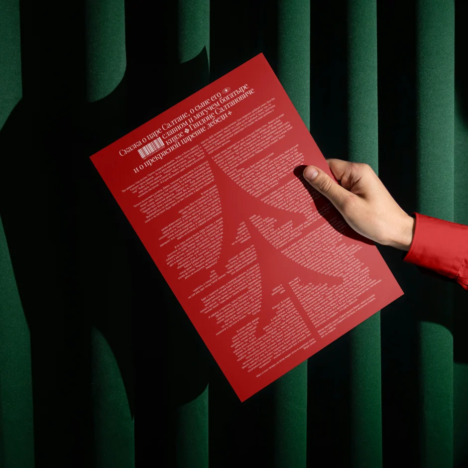
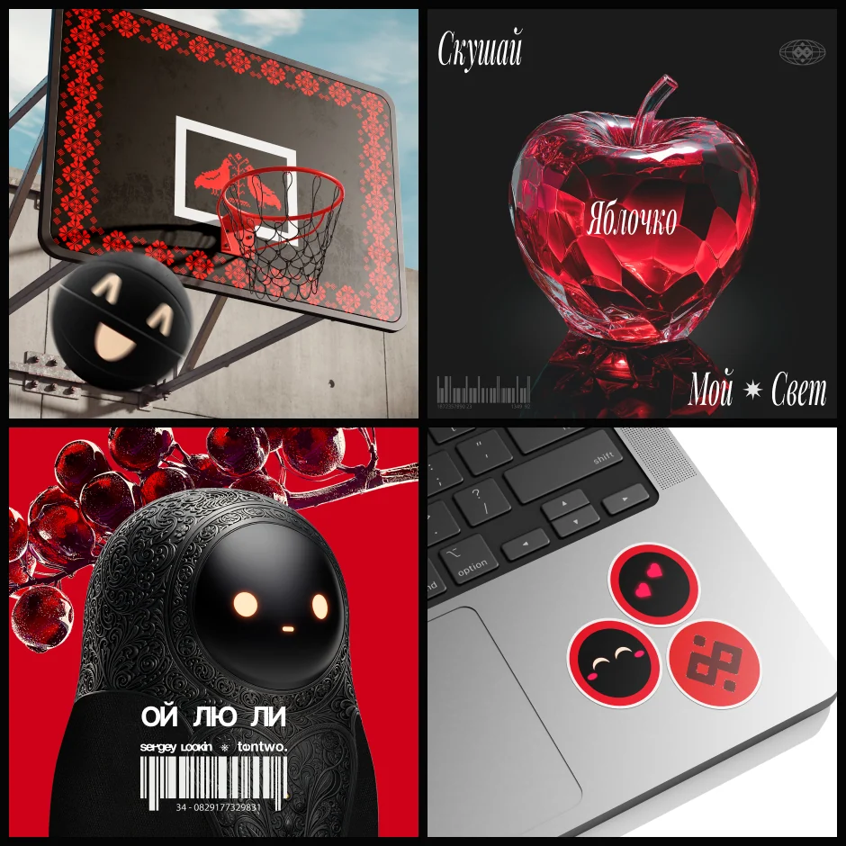
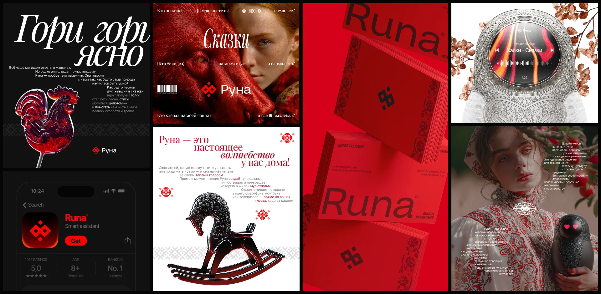
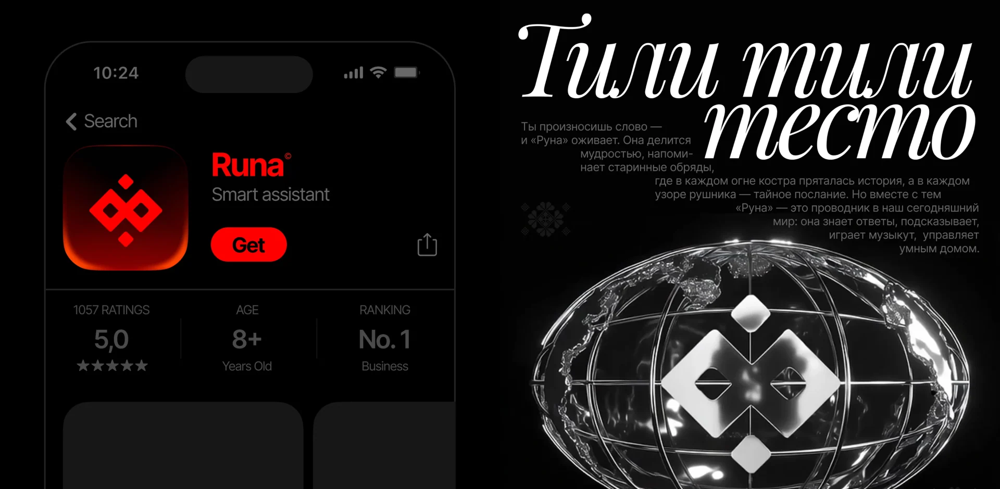

Runa
An AI assistant shaped like a matryoshka — where Slavic culture meets the technology of tomorrow.
I built Runa from scratch — from the first idea to its form, from ornament to voice. A deeply personal project: a tribute to heritage, a love of craft and an attempt to picture tomorrow.
The real question wasn't how it looks, but what it says. I wanted to prove a cultural code can live not in a museum but in a modern, high-tech object — and feel natural there.
I leaned on folk tales, proverbs and archetypes — the rhythm, symbolism and plasticity of the tradition. Rather than copy ornament, I reinterpreted it into clean form and a distinctive typography. The project runs through a pipeline of eight tools — from generative networks to 3D and animation.
The result is a coherent character where heritage reads at first glance — a series of twenty-plus visuals published on Behance to a strong response from the community. A story about beauty where memory meets progress.
- A pipeline of 8 tools: generative models, 3D, animation, graphic design.
- A visual language grounded in folk tales, proverbs and cultural archetypes.
- A series of 20+ visuals on Behance with high community engagement.
- The matryoshka form as a cultural code inside a high-tech object.




